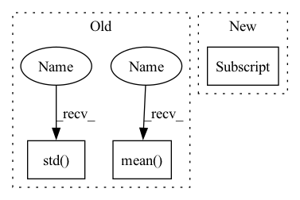

Pattern ID :35016

Before Change
centers += [cc]
centers = np.array(centers)
mean = centers.mean(axis=2)
std = centers.std(axis=2)
return mean, std
After Change
kmeans = KMeans(n_clusters=2).fit(meter)
labels = kmeans.labels_
lab0 = meter[labels == 0]
lab1 = meter[labels == 1]
mean += [[lab0.mean(), lab1.mean()]]
std += [[lab0.std(), lab1.std()]]
In pattern: SUPERPATTERN
Frequency: 4
Non-data size: 3
Instances
Fragment ID: 100093957
Project Name: uca-datalab/nilm-thresholding
Commit Name: 2b24d37855791e9ca50d60b2d7a9443f09a1cc70
Time: 2020-05-12
Author: danipg1409@gmail.com
File Name: better_nilm/model/preprocessing.py
M Class Name: AnonimousClass
N Class Name: AnonimousClass
M Method Name: _get_cluster_centroids(1)
N Method Name: _get_cluster_centroids(1)
M Parent Class:
N Parent Class:
M File Name: better_nilm/model/preprocessing.py
N File Name: better_nilm/model/preprocessing.py
M Start Line: 212
M End Line: 229
N Start Line: 212
N End Line: 228
'>
Before Change
data_params.t_start = np.min(df["ds"].iloc[:split_idx])
data_params.t_scale = np.max(df["ds"].iloc[:split_idx]) - data_params.t_start
if "y" in df:
data_params.y_shift = np.mean(df["y"].iloc[:split_idx].values) if normalize_y else 0.0
data_params.y_scale = np.std(df["y"].iloc[:split_idx].values) if normalize_y else 1.0
// Future TODO: extra regressors
After Change
if df["ds"].dtype == np.int64:
df.loc[:, "ds"] = df.loc[:, "ds"].astype(str)
df.loc[:, "ds"] = pd.to_datetime(df.loc[:, "ds"])
data_params = AttrDict({})
// default case, use full dataset
'>
Fragment ID: 100093956
Project Name: ourownstory/neural_prophet
Commit Name: 1192f2f451030b40c2b8561aa0ffd602479e2852
Time: 2020-06-05
Author: oskar.triebe@merantix.com
File Name: neuralprophet/df_utils.py
M Class Name: AnonimousClass
N Class Name: AnonimousClass
M Method Name: init_data_params(4)
N Method Name: init_data_params(4)
M Parent Class:
N Parent Class:
M File Name: neuralprophet/df_utils.py
N File Name: neuralprophet/df_utils.py
M Start Line: 18
M End Line: 37
N Start Line: 20
N End Line: 44
'>
Before Change
num_train = self.x_num_train
cat_train = self.x_cat_train
self.num_mean = num_train.mean()
self.num_std = num_train.std()
self.cat_mode = cat_train.mode().loc[0]
def impute(self, impute_type="simple"):
// impute_type: zero, simple(mean, mode)
After Change
cat_train = self.x_cat_train
des = num_train.describe()
self.num_mean = des.loc["mean"]
self.num_std = des.loc["std"]
self.cat_mode = cat_train.mode().loc[0]
def impute(self, impute_type="simple"):
'>
Fragment ID: 100093954
Project Name: deeperlearner/pytorch-template
Commit Name: afaa657ee5e398083ca471414ee946071ce43853
Time: 2021-03-20
Author: b04202035@g.ntu.edu.tw
File Name: data_loader/examples/Adult_loader.py
M Class Name: AdultDataset
N Class Name: AdultDataset
M Method Name: compute_data_info(2)
N Method Name: compute_data_info(2)
M Parent Class: Dataset
N Parent Class: Dataset
M File Name: data_loader/examples/Adult_loader.py
N File Name: data_loader/examples/Adult_loader.py
M Start Line: 88
M End Line: 89
N Start Line: 88
N End Line: 90
'>
Before Change
q_losses, policy_loss, entropy_loss, alpha = self.agent.update(data_batch)
self.logger.log_var("loss/q_min",np.min(q_losses),ite)
self.logger.log_var("loss/q_max",np.max(q_losses),ite)
self.logger.log_var("loss/q_mean",np.mean(q_losses),ite)
self.logger.log_var("loss/q_std",np.std(q_losses),ite)
self.logger.log_var("loss/policy",policy_loss,ite)
self.logger.log_var("loss/entropy",entropy_loss,ite)
self.logger.log_var("others/entropy_alpha",alpha,ite)
After Change
if ite % self.log_interval == 0:
for loss_name in loss_dict:
self.logger.log_var(loss_name, loss_dict[loss_name], ite)
if ite % self.test_interval == 0:
log_dict = self.test()
avg_test_reward = log_dict["return/test"]
'>
Fragment ID: 100093950
Project Name: x35f/unstable_baselines
Commit Name: 29d21b411c02aa5529540bac557cbb9cd79e7f17
Time: 2021-03-23
Author: 1621322691@qq.com
File Name: redq/trainer.py
M Class Name: REDQTrainer
N Class Name: REDQTrainer
M Method Name: train(1)
N Method Name: train(1)
M Parent Class: BaseTrainer
N Parent Class: BaseTrainer
M File Name: redq/trainer.py
N File Name: redq/trainer.py
M Start Line: 48
M End Line: 91
N Start Line: 43
N End Line: 87
'>
Before Change
cc = np.sort(cc, axis=0)
centers += [cc]
centers = np.array(centers)
mean = centers.mean(axis=2)
std = centers.std(axis=2)
return mean, std
After Change
meter = ser[:, :, idx].flatten()
kmeans = KMeans(n_clusters=2).fit(meter)
labels = kmeans.labels_
lab0 = meter[labels == 0]
lab1 = meter[labels == 1]
mean += [[lab0.mean(), lab1.mean()]]
std += [[lab0.std(), lab1.std()]]
'>
Fragment ID: 100093946
Project Name: uca-datalab/nilm-thresholding
Commit Name: 2b24d37855791e9ca50d60b2d7a9443f09a1cc70
Time: 2020-05-12
Author: danipg1409@gmail.com
File Name: better_nilm/model/preprocessing.py
M Class Name: AnonimousClass
N Class Name: AnonimousClass
M Method Name: _get_cluster_centroids(1)
N Method Name: _get_cluster_centroids(1)
M Parent Class:
N Parent Class:
M File Name: better_nilm/model/preprocessing.py
N File Name: better_nilm/model/preprocessing.py
M Start Line: 212
M End Line: 229
N Start Line: 212
N End Line: 228